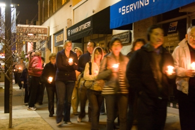

|
|
|
|
37th Annual San
Jose
Day of
Remembrance
"Stand Up To Hate"
Sunday,
February 19, 2017
5:30pm-7:30 pm
San Jose Buddhist
Church Betsuin
640 N.
Fifth Street, San Jose, CA
Event is free and
open to the public |
|
| |
|
|
In
the days following the attack on Pearl Harbor, the FBI
rounded up thousands of Japanese immigrants who were
detained without charges. Then, on February 19, 1942
President Franklin D. Roosevelt signed Executive Order
9066, forcing 120,000 Japanese Americans into
concentration camps. The Commission on the Wartime
Relocation and Incarceration of Civilians concluded
that this action was a result of “race prejudice, war
hysteria, and a failure of political leadership.”
The 37th Annual San Jose Day of Remembrance event
takes place on the 75th anniversary of the
signing of Executive Order 9066. The 2017 event
carries the theme, "Stand Up To Hate." Hundreds of
people will gather together at this annual event not
only to remember the great civil liberties tragedy
that occurred 75 years ago, but also to reflect on the
rising tensions that are building within our
communities today and what we can do to build bridges
of trust, respect, and friendship.
The program will feature
Samina Masood, Executive Director of Silicon Valley
FACES, an
organization dedicated to creating systemic change by
equipping individuals to resist bias, bigotry,
bullying, and violence; former internee,
Congressman Mike Honda (inivited); and other
representatives from the community. The 2017
event also includes performances by the
Aswat
Ensemble,a multi-ethnic and multi-racial musical
group that brings folkloric, classical, and
contemporary Arabic music to the public, and
Japantown's San Jose
Taiko. Attendees are also asked to participate in
the traditional candlelight procession through
historic Japantown which honors the memory of Japanese
Americans incarcerated in World War II concentration
camps.
The event is free and open to the public. For more
information call 408-373-0817, email at
info@sjnoc.org.
Click
here to
download the Save the Date 2017 Day of Remembrance
flyer. |
|
|
|
One candle is
lit in memory for each of the WRA
internment camps. |
|
|
The Day of
Remembrance is an event that aims to
bring different communities together
in order to build trust, respect, and
understanding among all people and to
renew our pledge to fight for
equality, justice, and peace. |
|
| |
|
|
 |
The traditional
candlelight procession through historic
Japantown remembers how the incarceration of
Japanese Americans devasted the community. |
| Photos
courtesy of Andy Frazer |
|
|
| |
|
|
|
|
|